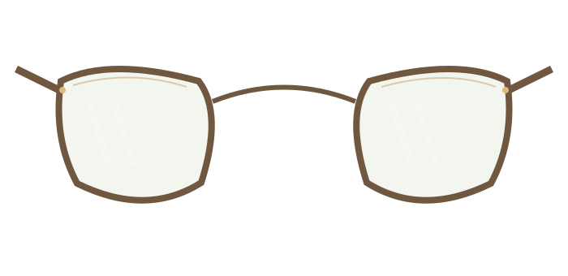

Book your test
The brief proposes a thorough 45-minute eye test from £35. Ask a verified practice about current scope and availability.
MARYLEBONE / A DIFFERENT PERSPECTIVE
Independent opticians in Marylebone — exceptional eyewear, a considered fit. Explore eye tests from £35 in this practice concept.
ILLUSTRATIVE PRACTICE / NO VERIFIED CLINICAL SERVICE

FORM / FUNCTION / INDIVIDUALITY
Titanium · 30 colourways* · £195
*SAMPLE RANGE FROM BRIEFA FRAME FOR YOUR EVERYDAY
Illustrative collection prices. Only three frame concepts are supplied below; no live inventory or lens efficacy claims.
The brief proposes a thorough 45-minute eye test from £35. Ask a verified practice about current scope and availability.
Discuss how you use your eyes at work, during sport and in daily life before selecting lenses or frames.
In-person measurements and trained dispensing matter. An illustration cannot assess prescription, fit or vision.
INDEPENDENT, BY DESIGN
The concept centres on recommendations made for the person, not a sales target.
Understand the options and ask why a particular lens or frame might suit your daily routine.
Thoughtful materials, varied shapes and a fit that should be checked in person.
The proposed independent model values a continuing relationship with a qualified professional.
Family-run since 1998 · 5-star rating · 2,400+ patients · FODO membership
UNVERIFIED CONCEPT DETAILS FROM THE BRIEF, NOT REAL CREDENTIALS
TIME FOR YOUR EYES
A thorough conversation, not a conveyor belt. The sample service menu is for information only; this site cannot assess eye health.
Brief includes a health check, with OCT on request.
New fits and aftercare concept. Suitability needs professional assessment.
Under-16 GOS support proposed in the brief, subject to eligibility and provider participation.
Confirm current entitlement and practice acceptance directly.
Illustrative prices. No eligibility decision, appointment or current NHS service is confirmed. Sudden vision changes or eye pain need prompt professional assessment, not this planner.
THE EDIT / NEW PERSPECTIVES
No frame concepts in this selection.
Original vector product studies, not photographs. Listed materials, origins, colourway counts and prices are sample specifications, not verified stock.
“Switched from a chain optician 3 years ago and will never go back.”
Sarah J. / Marylebone / Sample review, not verified
A CONSIDERED START
Prepare for an example visit. No clinical history is requested and no appointment, eligibility check or message is sent.